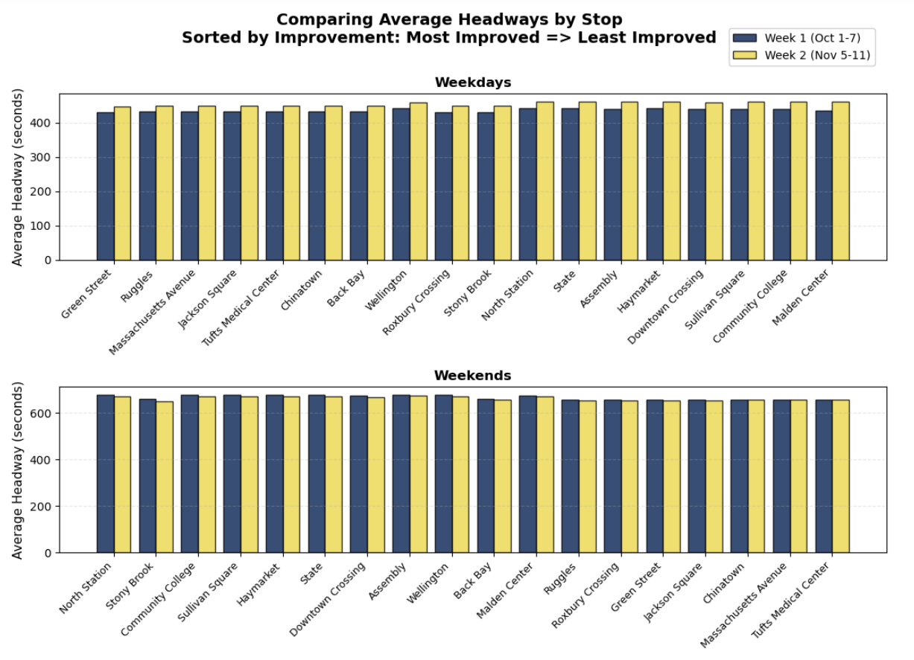
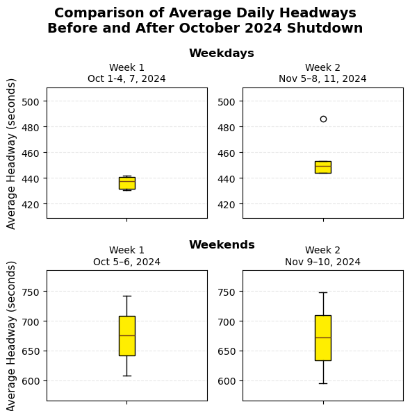

MBTA Orange Line Performance Before & After the October 2024 Shutdown
Colin Chu, Alex Ferguson, Anish Sanghi • DS4200 Fall 2025
Project Overview
The month-long Orange Line shutdown in October 2024 replaced 5.2 miles of rail and eliminated virtually all slow zones. Riders immediately noticed faster trips, but by how much exactly? And did reliability improve too?
This project answers those questions using public headway data from MBTA’s Blue Book Portal. Due to the service discrepancies between weekdays and weekends, we split our data into an equal number of pre- and post-shutdown weekdays (Oct 1–4, 7), (Nov 5-8, 11) and weekends (Oct 5-6), (Nov 9-10). For this segment, we measured::
Speed → The end-to-end journey times (18-station trunk segment - Green St to Malden Center Northbound) and the average speed between each station segment
Reliability/Frequency → Headways (number of seconds between trains)
Completed tasks:
Median journey time comparison (pre vs. post, weekdays & weekends)
Average headways by stop, by hour, and daily distribution
For this project, we used public headway data from MBTA’s Blue Book Portal, specifically the ‘MBTA Rapid Transit Headways 2024’ dataset, which includes information about each subway trip between stations. For the scope of our project, we filtered the dataset to just our two weeks: Oct 1-7 and Nov 5-11 2024, and trips only for the Orange Line heading north from Forest Hills to Oak Grove. After trimming and filtering, our dataset has about 36000 rows and 10 features, including service date, route and trip ids, parent station, stop name, time of departure, headway in seconds, and added features with information about if its a weekday/weekend, the hour and which week it belongs to.
Static Visualization 1: Average Headways by Stop

Design justification:
• Mark: Grouped bar — ideal for direct pre/post comparison per stop
• Stops sorted by improvement magnitude → biggest winners appear first
• Color: pre = orange, post = green ("green = better")
• Faceted by weekday/weekend
• Static format makes the main story immediately visible without any interaction.
Static Visualization 2: Daily Average Headway Distributions

Design justification:
• Mark: Boxplot — perfect for showing median + variability day-to-day
• Nearly identical boxes pre/post → instantly proves reliability did not improve
• Separate panels for weekdays vs. weekends respect different service patterns.
Interactive Visualization 1: Average Headway by Time of Day
How to use this interactive headway graph:
The left panel shows weekdays (solid lines)
The right panel shows weekends (dashed lines)
Use the Weeks radio buttons at the top:
• Both → navy blue = Pre-shutdown, gold = Post-shutdown
• Week 1 (Pre) → only navy blue highlighted
• Week 2 (Post) → only gold highlighted
Hover any point to see the exact average headway in minutes for that hour
Design justification:
• Mark: Line and point, gives insight to headways at different times of the day + judge headways hourly to compare changes in parts of the day and identify outliers
Point is used for users to hover over for the tooltip to look at the average headway for each hour of both weeks
• X-axis: hour of each day
• Y-axis: average headway (minutes)
• Separate panels for weekdays vs. weekends respect different service patterns
Interactive Visualization 2: Average Speed by Segment Map
How to use the interactive Orange Line Speed Map:
There are four maps:
Top-left: Weekdays Pre-shutdown | Top-right: Weekdays Post-shutdown
Bottom-left: Weekends Pre-shutdown | Bottom-right: Weekends Post-shutdown
Hover over any colored line segment → tooltip shows exact average speed (mph) before and after the shutdown, plus the improvement
Use mouse scroll to zoom, drag to pan, or click the +/− buttons
Design justification for the speed map:
• Mark: Colored geographic line segments
• Position: real lat/lon coordinates → accurate spatial context
• Color: cividis blue/yellow coloscheme used for colorblind accessibility + greyscale advantages
• 2×2 facet grid clearly separates pre/post and weekday/weekend
• Hover + zoom/pan interactivity reveals precise segment-level improvements
Conclusion – What We Learned
The October 2024 Orange Line shutdown was a resounding success on speed — the speed map shows massive gains across nearly the entire line, especially in the repaired Southwest Corridor.
On reliability and frequency, we can see that:
• Stop-by-stop headways: almost no change, leans towards weekdays during week 2 performing worse even
• Daily distributions: identical boxplots, also leans towards weekdays during week 2 performing worse
• Hourly patterns: slight improvement on headways during 11am-1pm, discrepancies during week 2 are explained by outliers at 1 am so overall slight improvement after shutdown
Final verdict: Riders now enjoy dramatically faster trips, and have very slight improvements on headways during specific hours. Future efforts must target operations, scheduling, and train availability — not just infrastructure.